Menampilkan data pribadi pengguna secara read-only.
Semua
Informasi yang Ditampilkan
Nama Lengkap, NIP, dan Email
Jabatan, Direktorat, Seksi, dan Unit Kerja
Nomor Telepon dan Role dalam sistem
Tips
Untuk mengubah data profil, gunakan halaman Pengaturan (Settings). Data seperti NIP dan Role hanya bisa diubah oleh Admin.
1.5 Pengaturan Akun
Halaman untuk mengubah password, profil, dan konfigurasi tanda tangan digital (PSign).
Semua
Langkah Penggunaan
Pilih tab yang ingin diubah: Edit Profil, Ubah Password, atau PSign.
Edit Profil — Ubah nama, email, nomor telepon, lalu klik Simpan.
Ubah Password — Masukkan password lama, password baru, dan konfirmasi, lalu klik Ubah Password.
PSign — Upload tanda tangan digital untuk digunakan pada sertifikat/dokumen.
Tombol / Elemen
Fungsi
Simpan
Menyimpan perubahan profil
Ubah Password
Memproses perubahan password
Upload PSign
Mengunggah file tanda tangan digital
2. CMP — Competency Management Portal
Modul pengelolaan kompetensi: dokumen KKJ, assessment, rekaman, sertifikat, dan analitik.
2.1 CMP Hub
Halaman utama modul CMP. Pusat akses ke semua fitur kompetensi.
Semua
Menu yang Tersedia
Menu
Fungsi
Dokumen KKJ
Lihat dan unduh dokumen Kerangka Kompetensi Jabatan
Assessment
Daftar assessment yang ditugaskan dan akses ujian
Records
Riwayat assessment dan training
Analytics Dashboard
Statistik dan grafik performa assessment (Admin/HC)
Certificate
Lihat dan unduh sertifikat kompetensi
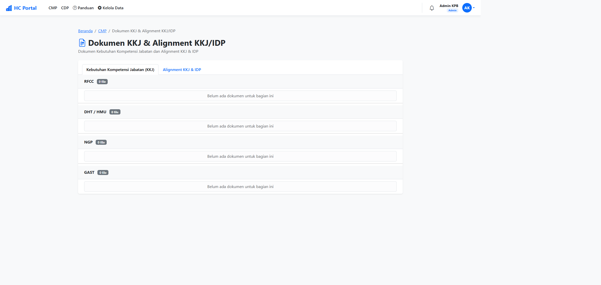
2.2 Dokumen KKJ
Viewer dokumen Kerangka Kompetensi Jabatan per bagian dalam format tab.
Semua
Halaman viewer dokumen Kerangka Kompetensi Jabatan. Menampilkan file KKJ aktif yang dikelompokkan per bagian (departemen) dalam format tab.
Pilih tab bagian untuk melihat file KKJ dari departemen tersebut.
Klik Download pada file yang ingin diunduh (format PDF atau Excel).
2.3 Assessment
Daftar assessment yang ditugaskan kepada pekerja.
Semua
Langkah Penggunaan
Lihat daftar assessment yang ditugaskan beserta status, jadwal, dan waktu ujian.
Klik Mulai Ujian pada assessment yang berstatus Belum Dikerjakan dan sudah masuk jadwal.
Untuk assessment yang sudah selesai, klik Lihat Hasil untuk melihat skor.
Tombol
Fungsi
Mulai Ujian
Memulai sesi ujian assessment (hanya aktif saat jadwal terbuka)
Lihat Hasil
Melihat hasil dan skor assessment yang sudah dikerjakan
Verifikasi
Proses verifikasi identitas sebelum memulai ujian
Perhatian
Ujian memiliki batas waktu. Pastikan koneksi internet stabil sebelum memulai ujian.
2.4 Halaman Ujian (Start Exam)
Semua Pekerja yang ditugaskan
Halaman ujian aktif dengan tampilan soal, pilihan jawaban, timer, dan progress tracking.
Baca soal yang ditampilkan dengan seksama.
Pilih jawaban dengan mengklik opsi jawaban (A/B/C/D/E).
Gunakan tombol Sebelumnya / Selanjutnya untuk navigasi antar soal.
Perhatikan timer di bagian atas — ujian otomatis berakhir saat waktu habis.
Klik Selesai & Review untuk meninjau jawaban sebelum submit.
Tombol
Fungsi
Sebelumnya
Kembali ke soal sebelumnya
Selanjutnya
Lanjut ke soal berikutnya
Nomor Soal
Navigasi langsung ke soal tertentu (panel samping)
Selesai & Review
Menuju halaman ringkasan jawaban sebelum submit final
2.5 Ringkasan Ujian (Exam Summary)
Semua
Halaman review sebelum submit final. Menampilkan daftar semua soal beserta jawaban yang dipilih.
Periksa daftar jawaban — soal yang belum dijawab ditandai.
Klik Edit pada soal tertentu untuk mengubah jawaban.
Klik Submit Ujian untuk mengirim jawaban secara final.
Tombol
Fungsi
Edit
Kembali ke soal tertentu untuk mengubah jawaban
Submit Ujian
Mengirim semua jawaban (tidak bisa diubah setelahnya)
2.6 Hasil Assessment (Results)
Semua
Menampilkan hasil setelah ujian selesai: skor total, status lulus/tidak lulus, dan detail jawaban per soal.
Lihat skor total dan status kelulusan di bagian atas.
Scroll ke bawah untuk melihat detail jawaban per soal (benar/salah).
Jika lulus, klik Lihat Sertifikat untuk melihat dan mengunduh sertifikat.
2.7 Sertifikat (Certificate)
Semua
Tampilan sertifikat kompetensi dalam format HTML yang bisa diunduh sebagai PDF. Menampilkan data pekerja, detail assessment, skor, tanggal, dan tanda tangan pengesah.
Tombol
Fungsi
Download PDF
Mengunduh sertifikat dalam format PDF
Cetak
Mencetak sertifikat langsung dari browser
2.8 Records
Riwayat assessment dan training pekerja dengan filter dan export.
Semua
Langkah Penggunaan
Gunakan filter (Seksi, Unit, Kategori, Status) untuk menyaring data.
Klik nama pekerja untuk melihat detail rekaman individu.
Klik Export untuk mengunduh data dalam format Excel.
Tombol
Fungsi
Filter
Menyaring data berdasarkan seksi, unit, kategori, atau status
Halaman detail riwayat assessment dan training seorang pekerja. Menampilkan semua assessment yang pernah dikerjakan beserta skor, tanggal, status kelulusan, dan link ke sertifikat.
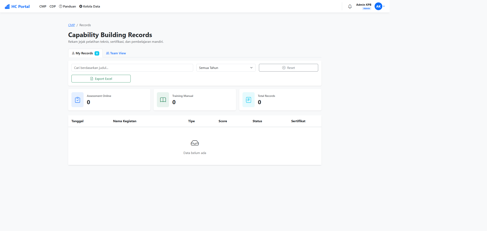
2.10 Records Tim (Records Team)
Tampilan records untuk beberapa pekerja sekaligus (perspektif tim/unit).
AdminHC
Tampilan records untuk beberapa pekerja sekaligus (perspektif tim/unit). Mendukung export data ke Excel.
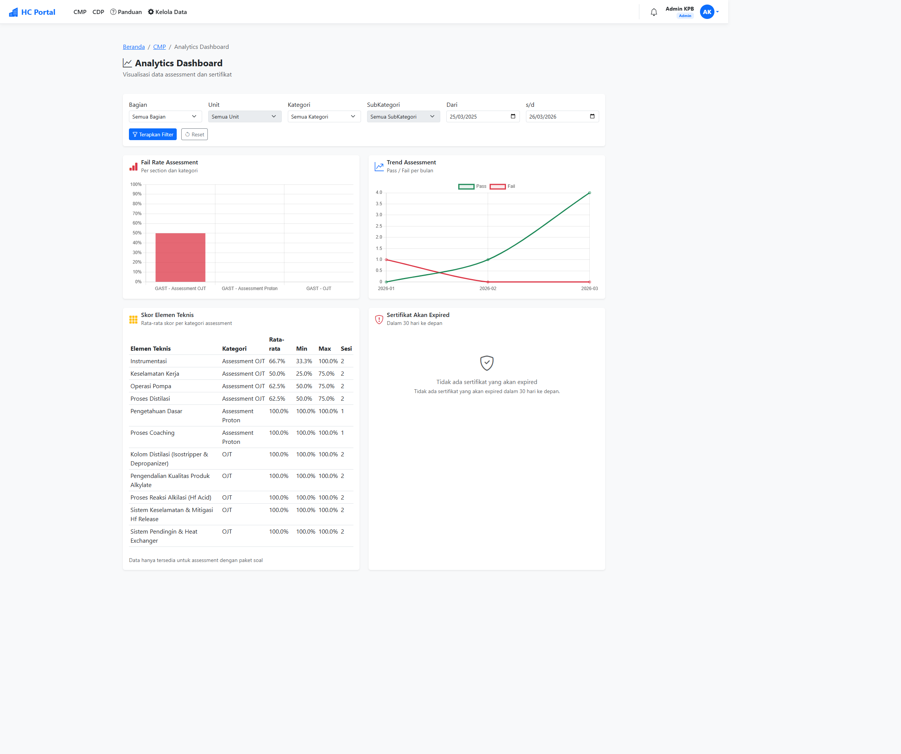
2.11 Analytics Dashboard
Dashboard analitik dengan grafik dan statistik performa assessment.
AdminHC
Isi Halaman
Fail Rate per Bagian & Kategori — Persentase kegagalan assessment per bagian dan kategori.
Trend Assessment — Grafik tren lulus/gagal per bulan untuk analisis waktu.
Elemen Teknis Breakdown — Analisis avg/min/max scoring per elemen teknis.
Gain Score Analysis — Perbandingan skor Pre-Test vs Post-Test untuk assessment Pre-Post.
Item Analysis — Difficulty Index, Discrimination Index, dan analisis Distractors per soal.
Multi-level Filtering — Filter bertingkat: bagian, unit, kategori, sub-kategori dengan drill-down.
Export Excel — Unduh seluruh data analytics ke format Excel.
2.12 Budget Training
AdminHC
Halaman pengelolaan anggaran pelatihan per bagian dan unit kerja. Diakses via CMP → Budget Training.
Summary Cards — Total anggaran, realisasi, dan persentase penyerapan.
Filter — Saring data berdasarkan tahun, bagian, unit, dan kategori pelatihan.
Inline Edit — Klik cell realisasi untuk langsung mengubah nilai tanpa membuka form.
Bulk Operations — Pilih beberapa baris lalu gunakan bulk delete atau bulk update.
Import Excel — Upload data anggaran dari file Excel.
Export Excel — Unduh data anggaran ke file Excel.
Chart — Grafik perbandingan anggaran vs realisasi per kategori.
2.13 Sertifikasi Management
AdminHC
Halaman manajemen sertifikat kompetensi pekerja. Diakses via CMP → Sertifikasi.
Grouped View — Daftar sertifikat dikelompokkan per jenis sertifikasi.
Filter & Search — Cari berdasarkan nama pekerja, jenis sertifikat, atau status.
Detail Worker — Klik nama pekerja untuk melihat semua sertifikat yang dimiliki.
Masa Berlaku — Status sertifikat: Active, Expiring Soon (30 hari), Expired.
Notifikasi Expired — Sistem otomatis mengirim notifikasi 30 hari sebelum kadaluarsa.
3. CDP — Career Development Portal
Modul pengembangan karir: IDP, Coaching Proton, dashboard perkembangan, deliverable, dan sertifikasi.
3.1 CDP Hub
Halaman utama modul CDP. Pusat akses ke semua fitur pengembangan karir.
Semua
Menu
Fungsi
Plan IDP
Dokumen panduan Individual Development Plan per bagian
Coaching Proton
Sesi coaching antara coach dan coachee
Dashboard
Ringkasan progress pengembangan karir
Deliverable
Detail deliverable kompetensi dan evidence
Histori Proton
Riwayat sesi coaching yang sudah selesai
Sertifikasi
Tracking sertifikasi Proton dengan approval workflow
3.2 Plan IDP
Halaman dokumen panduan pengembangan per bagian dan unit.
Semua
Langkah Penggunaan
Pilih bagian dan unit untuk menyaring dokumen panduan.
Lihat daftar file panduan (kurikulum, IDP template) yang tersedia.
Klik Download untuk mengunduh file panduan.
3.3 Coaching Proton
Halaman utama Coaching Proton untuk interaksi coach dan coachee.
CoachPekerja (Coachee)
Langkah Penggunaan
Lihat daftar sesi coaching yang dijadwalkan atau sedang berlangsung.
Coach: Klik Mulai Sesi untuk memulai sesi coaching baru.
Isi catatan, kesimpulan, dan hasil coaching dalam form yang tersedia.
Klik Simpan untuk menyimpan progress atau Selesaikan Sesi untuk mengakhiri.
Coachee: Lihat jadwal coaching dan feedback dari coach.
Tombol
Fungsi
Mulai Sesi
Memulai sesi coaching baru (Coach)
Simpan
Menyimpan catatan coaching sementara
Selesaikan Sesi
Mengakhiri dan menyelesaikan sesi coaching
Edit Sesi
Mengubah detail sesi coaching yang sudah ada
3.4 Edit Sesi Coaching
Coach
Form untuk mengedit detail sesi coaching: tanggal, catatan, kesimpulan, dan hasil. Hanya dapat diakses oleh coach yang bersangkutan.
Tombol
Fungsi
Simpan Perubahan
Menyimpan perubahan detail sesi
Batal
Membatalkan perubahan dan kembali ke halaman coaching
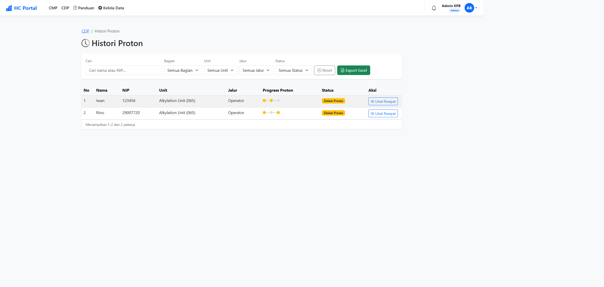
3.5 Histori Proton
Riwayat sesi coaching yang sudah selesai dengan ringkasan per sesi.
SemuaHC dapat export
Riwayat sesi coaching yang sudah selesai. Menampilkan ringkasan setiap sesi dengan link ke detail.
Lihat daftar sesi coaching lalu beserta tanggal, coach, dan ringkasan.
Klik Detail untuk melihat catatan lengkap sesi tersebut.
(HC) Klik Export untuk mengunduh data histori coaching.
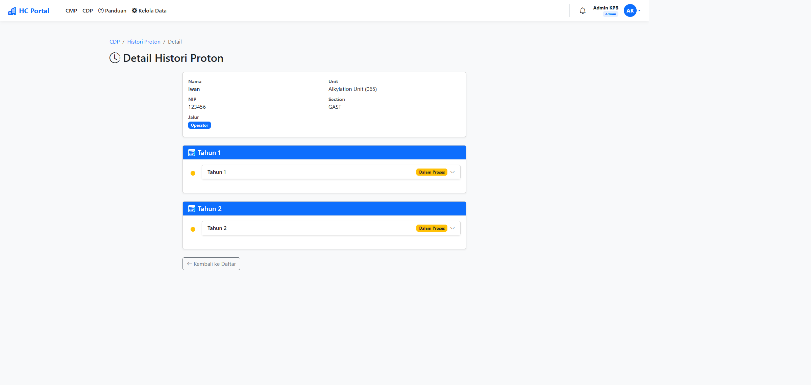
3.6 Detail Histori Proton
Detail lengkap dari satu riwayat coaching individu: seluruh sesi dan catatan.
Semua
Tampilan detail lengkap dari satu riwayat coaching individu: seluruh sesi, catatan, kesimpulan, dan hasil per pertemuan.
3.7 CDP Dashboard
Dashboard perkembangan karir: progress IDP, statistik coaching, dan pencapaian deliverable.
Semua
Isi Halaman
Track saat ini — Menampilkan track Proton yang sedang dijalani.
Progress deliverable — Bar progress penyelesaian deliverable kompetensi.
Statistik coaching — Jumlah sesi, frekuensi, dan status coaching.
Status sertifikasi — Progress sertifikasi Proton.
3.8 Deliverable
Semua
Detail deliverable kompetensi: menampilkan kompetensi/sub-kompetensi, guidance, form upload evidence, status approval, dan feedback reviewer.
Lihat daftar deliverable yang harus diselesaikan beserta panduan.
Upload evidence (bukti) menggunakan form yang tersedia.
Kirim untuk approval oleh coach/reviewer.
Lihat status dan feedback dari reviewer.
Tombol
Fungsi
Upload Evidence
Mengunggah file bukti penyelesaian deliverable
Kirim Approval
Mengirim deliverable untuk ditinjau oleh reviewer
Approve / Reject
(Reviewer) Menyetujui atau menolak deliverable
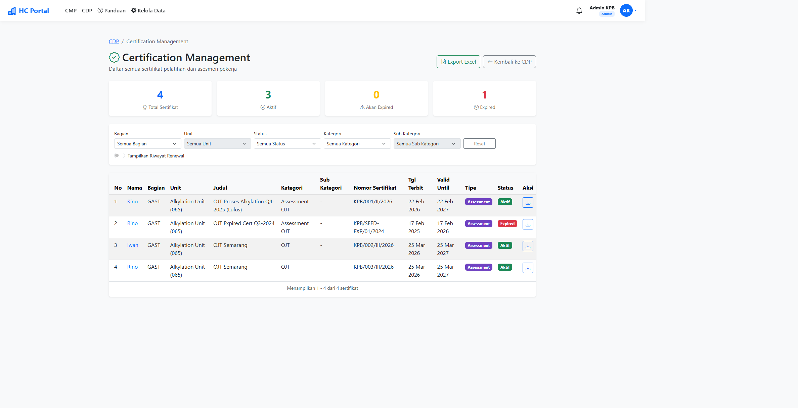
3.9 Sertifikasi (Certification Management)
Tracking sertifikasi Proton dengan workflow approval.
SemuaAdminHC dapat export
Tracking sertifikasi Proton dengan workflow approval. Pekerja melihat status sertifikasi mereka, sedangkan Admin/HC dapat mengelola dan export data.
Lihat daftar sertifikasi beserta status (Pending, Approved, Rejected).
Klik detail untuk melihat alur approval dan catatan.
(Admin/HC) Gunakan tombol Export untuk mengunduh data sertifikasi.
3.X Coach Workload
AdminHC
Halaman analisis beban kerja coach. Diakses via CDP → Dashboard → Coach Workload.
Summary Cards — Total coachees, jumlah coach, status balanced/overloaded/underloaded.
Threshold Configuration — Atur batas minimum dan maksimum coachee per coach.
Interactive Chart — Grafik distribusi beban kerja per coach dengan color coding.
Rebalancing Suggestions — Rekomendasi perpindahan coachee untuk menyeimbangkan beban.
Export Report — Unduh laporan workload ke Excel.
3.X Proton History (Timeline)
Semua
Timeline riwayat coaching per worker. Diakses via CDP → Histori Proton.
Timeline View — Tampilan kronologis sesi coaching per pekerja.
Detail Sesi — Klik sesi untuk melihat catatan coaching, evidence, dan keputusan.
Export Histori — Unduh riwayat coaching ke file Excel.
Coaching Transcript Export — Export sesi coaching ke PDF atau Excel.
4. Admin — Kelola Data
Modul administrasi untuk pengelolaan data pekerja, assessment, training, organisasi, dan konfigurasi sistem.
Akses Terbatas
Seluruh halaman di modul Admin hanya dapat diakses oleh pengguna dengan role Admin atau HC.
4A. Hub Kelola Data
Pusat navigasi ke semua fitur administrasi
4.1 Admin Hub (Kelola Data)
Halaman utama modul Admin dengan akses ke semua fitur kelola data.
AdminHC
Menu yang Tersedia
Menu
Fungsi
Manajemen Pekerja
CRUD data pekerja, import Excel, detail pekerja
Kelola Assessment
Buat, edit, monitoring assessment dan training
Paket Soal
Kelola paket soal dan pertanyaan assessment
Kategori
Kelola hirarki kategori assessment
KKJ Files
Upload dan kelola dokumen KKJ per bagian
CPDP Files
Upload dan kelola dokumen panduan CPDP
Organisasi
Kelola struktur organisasi (unit, bagian)
Coach-Coachee Mapping
Atur hubungan coach dan coachee
Renewal Certificate
Kelola sertifikat yang kedaluwarsa/akan kedaluwarsa
Audit Log
Lihat riwayat aktivitas sistem
4B. Manajemen Pekerja
CRUD pekerja, import data, dan detail informasi
4.2 Daftar Pekerja (Manage Workers)
Halaman utama kelola pekerja dengan pencarian, filter, dan aksi CRUD.
AdminHC
Langkah Penggunaan
Gunakan kolom pencarian untuk cari pekerja berdasarkan nama atau NIP.
Gunakan filter (Seksi, Unit, Role, Status Aktif/Non-aktif) untuk menyaring data.
Klik Tambah Pekerja untuk menambah pekerja baru.
Klik Import untuk import data pekerja dari file Excel.
Pada setiap baris pekerja, gunakan tombol aksi untuk Edit, Detail, atau Hapus.
Tombol
Fungsi
Tambah Pekerja
Membuka form tambah pekerja baru
Import
Membuka halaman import pekerja dari Excel
Edit
Mengedit data pekerja yang dipilih
Detail
Melihat informasi lengkap pekerja
Hapus
Menghapus data pekerja (dengan konfirmasi)
Toggle Aktif/Non-aktif
Menyaring tampilan pekerja aktif atau non-aktif
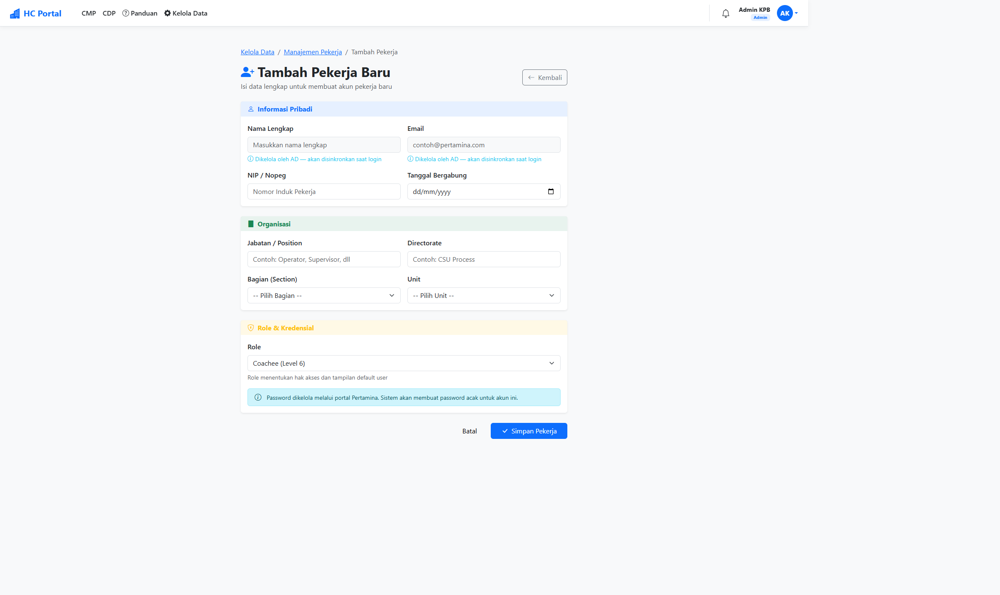
4.3 Tambah Pekerja (Create Worker)
Form untuk menambah data pekerja baru ke dalam sistem.
AdminHC
Isi semua field yang wajib: Nama Lengkap, Email, NIP, Jabatan.
Pilih Direktorat, Seksi, dan Unit Kerja.
Pilih Role (Admin, HC, atau Pekerja biasa).
Tentukan status Aktif atau tidak.
Klik Simpan untuk menyimpan data pekerja baru.
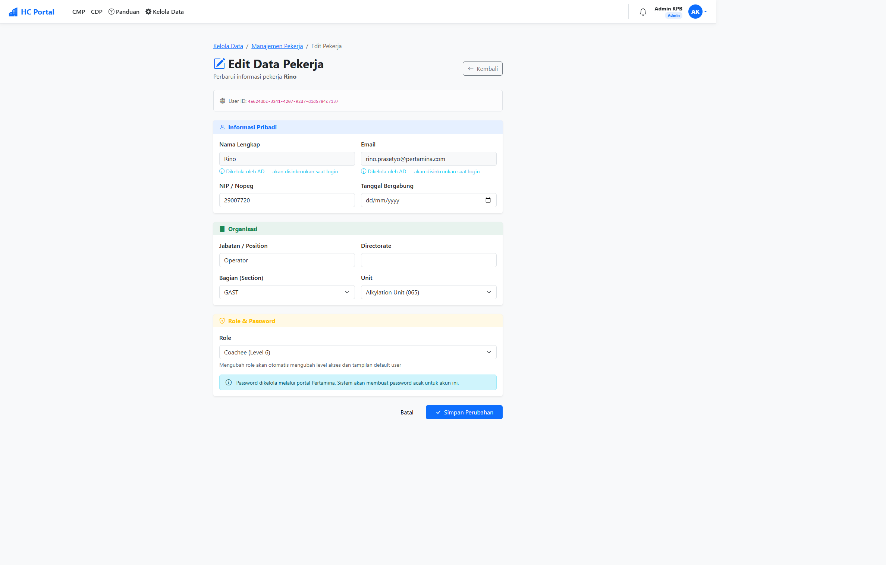
4.4 Edit Pekerja (Edit Worker)
Form untuk mengedit data pekerja yang sudah ada.
AdminHC
Semua field bisa diubah termasuk assignment unit kerja (multi-unit).
Tombol
Fungsi
Simpan
Menyimpan perubahan data pekerja
Batal
Membatalkan dan kembali ke daftar pekerja
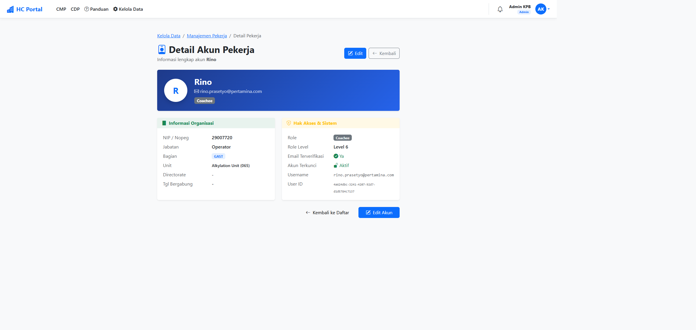
4.5 Detail Pekerja (Worker Detail)
Informasi lengkap seorang pekerja: profil, organisasi, dan hak akses.
AdminHC
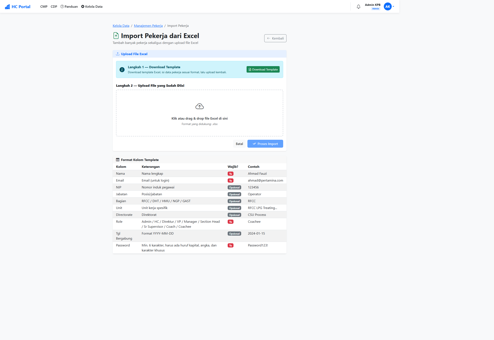
4.6 Import Pekerja (Import Workers)
Halaman untuk import data pekerja secara massal dari file Excel.
AdminHC
Klik Download Template untuk mengunduh file template Excel.
Isi data pekerja pada template sesuai format yang ditentukan.
Klik Pilih File untuk mengunggah file Excel yang sudah diisi.
Klik Proses Import untuk memproses data.
Sistem akan menampilkan hasil import (berhasil/gagal per baris).
Tombol
Fungsi
Download Template
Mengunduh file template Excel untuk import
Pilih File
Memilih file Excel untuk diupload
Proses Import
Memproses file Excel dan membuat/update data pekerja
4C. Kelola Assessment
Buat, edit, dan monitoring sesi assessment
4.7 Kelola Assessment (Manage Assessment)
Daftar assessment dan training dengan tab, pencarian, dan aksi CRUD.
AdminHC
Langkah Penggunaan
Pilih tab Assessment atau Training.
Gunakan pencarian untuk menemukan assessment/training tertentu.
Klik Buat Assessment Baru atau Tambah Training untuk menambah data.
Pada setiap baris, gunakan tombol Edit, Monitoring, atau Hapus.
Tombol
Fungsi
Buat Assessment Baru
Membuka form pembuatan assessment
Tambah Training
Membuka form penambahan training
Import Training
Import data training dari Excel
Edit
Mengedit assessment/training
Monitoring
Membuka halaman monitoring assessment
Hapus
Menghapus assessment/training
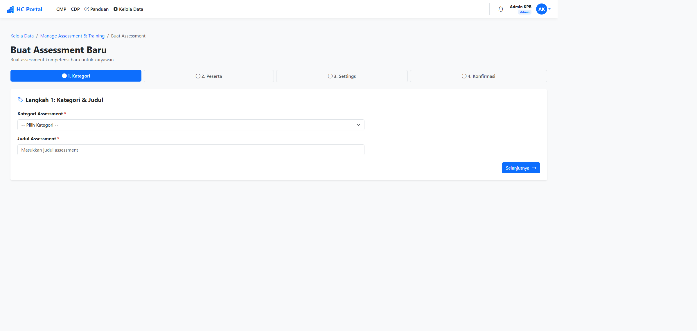
4.8 Buat Assessment (Create Assessment)
Form pembuatan assessment baru dengan konfigurasi lengkap.
AdminHC
Isi Judul dan pilih Kategori assessment.
Atur Jadwal (tanggal mulai-selesai) dan Waktu Ujian (durasi menit).
Tentukan Passing Score (%) untuk batas kelulusan.
Pilih Pekerja yang akan ditugaskan (bisa single atau bulk).
(Opsional) Aktifkan Renewal untuk assessment perpanjangan sertifikat.
Klik Simpan untuk membuat assessment.
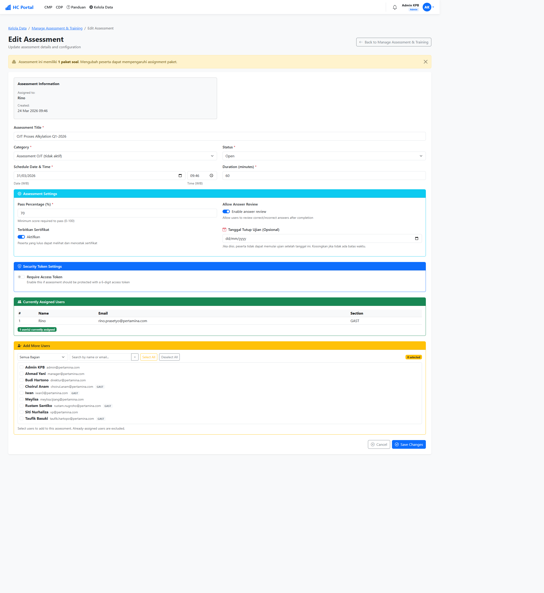
4.9 Edit Assessment
Form edit assessment dengan konfigurasi lengkap dan daftar peserta.
AdminHC
Yang bisa diubah: jadwal, waktu ujian, passing score, token, dan daftar pekerja.
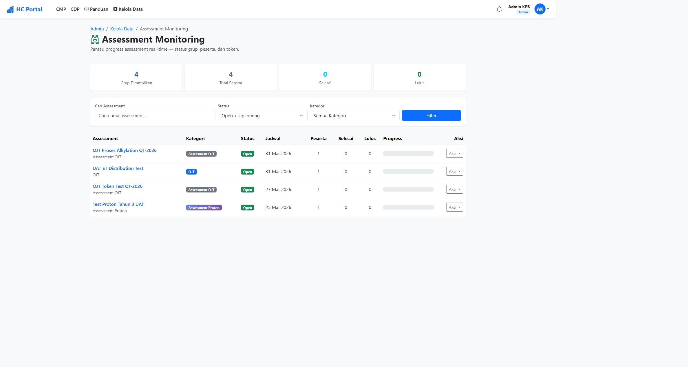
4.10 Monitoring Assessment
Hub monitoring assessment dengan filter dan tab status.
AdminHC
Hub monitoring assessment dengan filter berdasarkan judul, kategori, dan jadwal. Menampilkan tab: Pending, In Progress, dan Completed.
Gunakan filter untuk menemukan assessment yang ingin dimonitor.
Pilih tab status (Pending / In Progress / Completed).
Klik nama assessment untuk melihat detail monitoring.
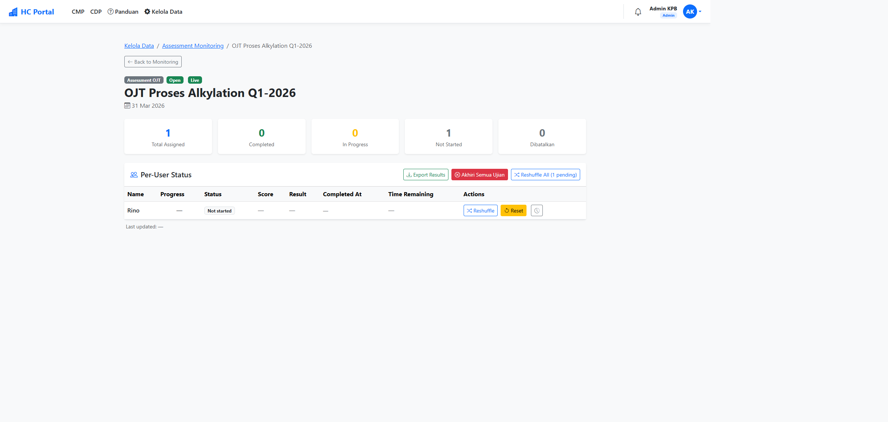
4.11 Detail Monitoring Assessment
Detail monitoring per assessment: status peserta, skor, dan aksi.
AdminHC
Daftar pekerja untuk assessment tertentu: status pengerjaan, skor, lulus/gagal, dan opsi interview.
Tombol
Fungsi
End Exam (Bulk)
Mengakhiri ujian secara paksa untuk semua pekerja yang masih mengerjakan
Interview
Menandai pekerja untuk interview tambahan
Lihat Detail
Melihat jawaban detail pekerja
4.12 Riwayat Assessment Pekerja
AdminHC
Riwayat semua assessment seorang pekerja: skor, status kelulusan, dan tanggal pengerjaan.
4D. Paket Soal & Kategori
Kelola paket soal, pertanyaan, dan hirarki kategori assessment
4.13 Kelola Paket Soal (Manage Packages)
AdminHC
Daftar paket soal assessment dengan aksi CRUD dan preview.
Tombol
Fungsi
Buat Paket
Membuat paket soal baru
Edit
Mengedit nama/konfigurasi paket
Preview
Melihat daftar soal dalam paket
Import Soal
Import soal dari file Excel
Hapus
Menghapus paket soal
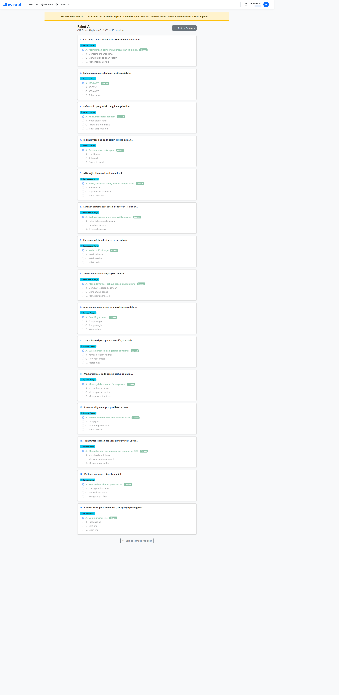
4.14 Preview Paket Soal
Tampilan semua pertanyaan dalam paket beserta opsi jawaban dan jawaban benar.
AdminHC
Berguna untuk review sebelum assessment dilaksanakan.
4.15 Import Soal (Import Package Questions)
AdminHC
Import pertanyaan ke dalam paket soal dari file Excel.
Klik Download Template untuk mengunduh format Excel.
Isi soal, opsi jawaban (A-E), dan jawaban benar pada template.
Upload file dan klik Proses Import.
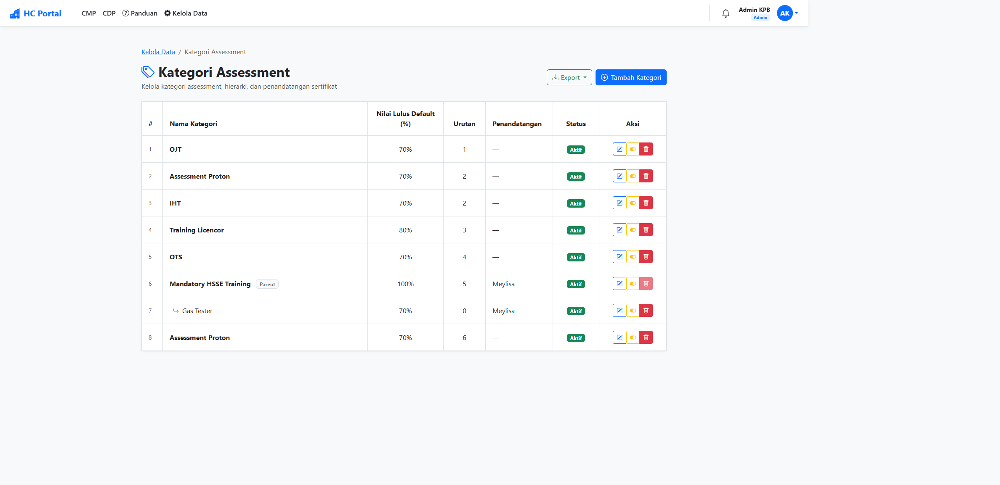
4.16 Kelola Kategori (Manage Categories)
Kelola hirarki kategori assessment dengan tree view dan export.
AdminHC
Kelola hirarki kategori assessment dengan tree view. Setiap kategori bisa memiliki penandatangan (signatory) dan sub-kategori.
Tombol
Fungsi
Tambah Kategori
Menambah kategori baru
Edit
Mengedit nama dan signatory kategori
Hapus
Menghapus kategori (jika tidak ada assessment terkait)
Export Excel
Mengunduh data kategori ke file Excel
Export PDF
Mengunduh data kategori ke file PDF
4E. Training
Tambah, edit, dan import data training pekerja
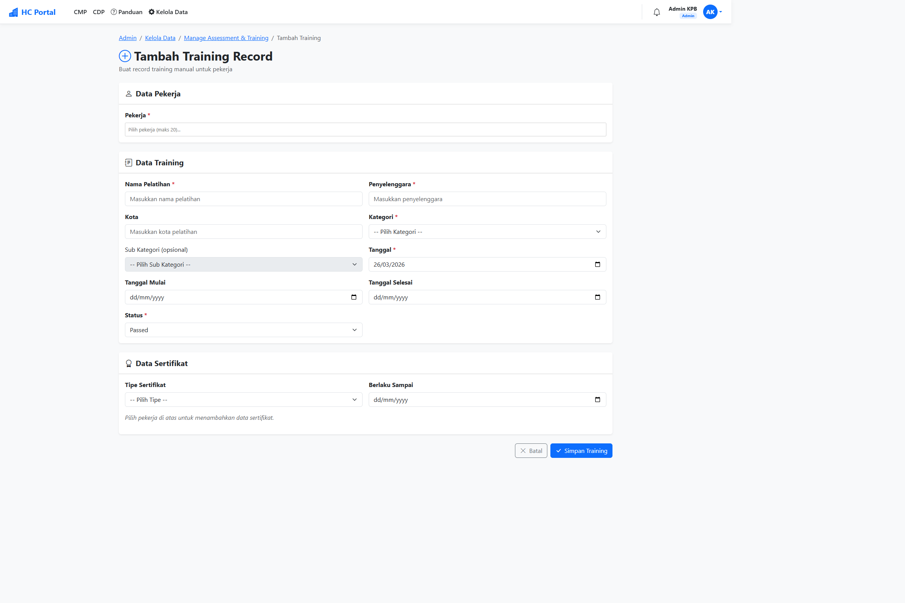
4.17 Tambah Training (Add Training)
Form untuk menambah rekaman training baru.
AdminHC
Isi Judul, pilih Kategori, dan atur Tanggal.
Isi Durasi, Biaya, Tipe Sertifikat, dan Masa Berlaku.
(Opsional) Upload file sertifikat training.
Klik Simpan untuk menyimpan data training.
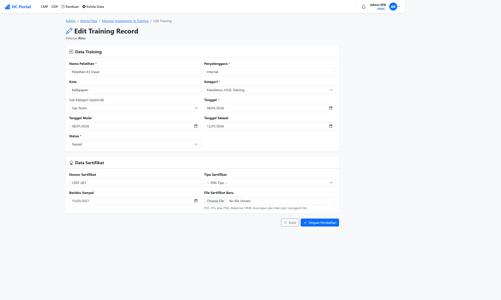
4.18 Edit Training
Form edit rekaman training: data training dan sertifikat.
AdminHC
Semua field bisa diubah termasuk file sertifikat.
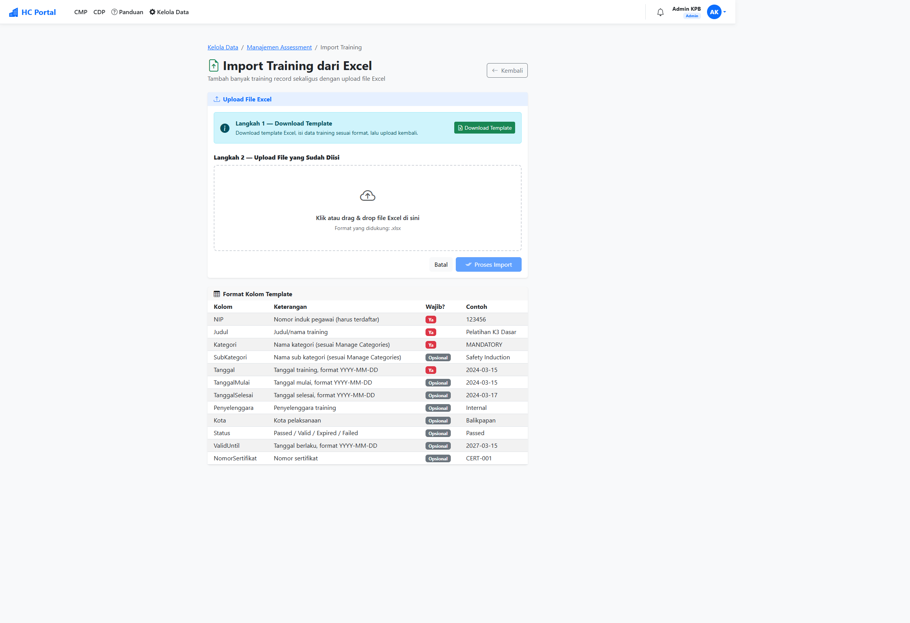
4.19 Import Training
Import data training secara massal dari file Excel.
AdminHC
Alur sama dengan Import Pekerja: download template, isi, upload, proses.
4F. KKJ Files & CPDP Files
Upload dan kelola dokumen per bagian
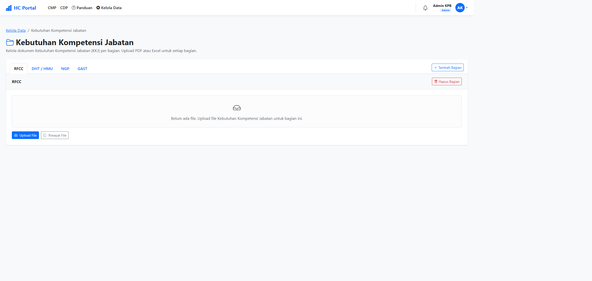
4.20 KKJ Files (KKJ Matrix)
Hub dokumen KKJ aktif yang dikelompokkan per bagian.
AdminHC
Hub dokumen KKJ aktif yang dikelompokkan per bagian. Admin dapat upload, download, dan hapus file.
Tombol
Fungsi
Upload File
Membuka form upload file KKJ baru
Download
Mengunduh file KKJ
Hapus
Menghapus (archive) file KKJ
Riwayat
Melihat riwayat file per bagian
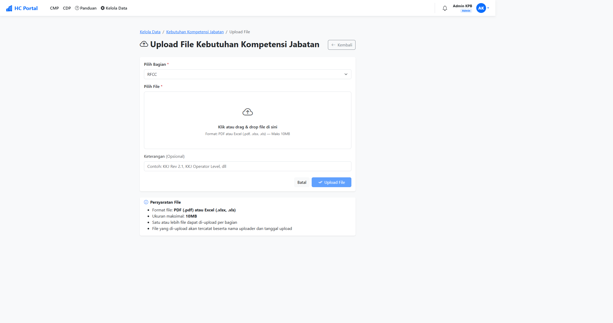
4.21 Upload KKJ
Form upload file KKJ baru dengan drag & drop.
AdminHC
Pilih bagian, unggah file (PDF/Excel), dan simpan.
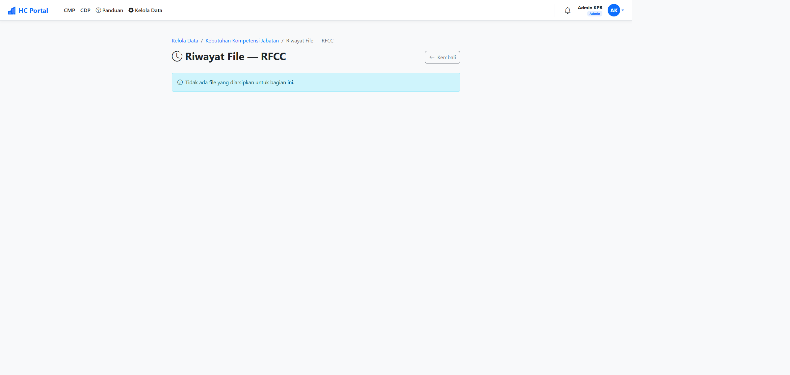
4.22 Riwayat KKJ
Riwayat file KKJ per bagian: file aktif, arsip, dan yang dihapus.
AdminHC
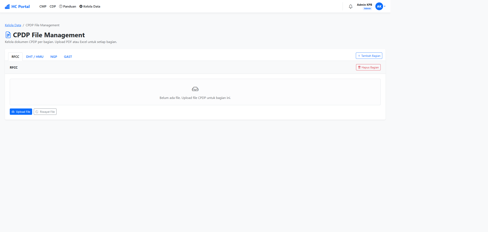
4.23 CPDP Files
Hub dokumen panduan CPDP aktif per bagian.
AdminHC
Fungsi dan tampilan mirip dengan KKJ Files.
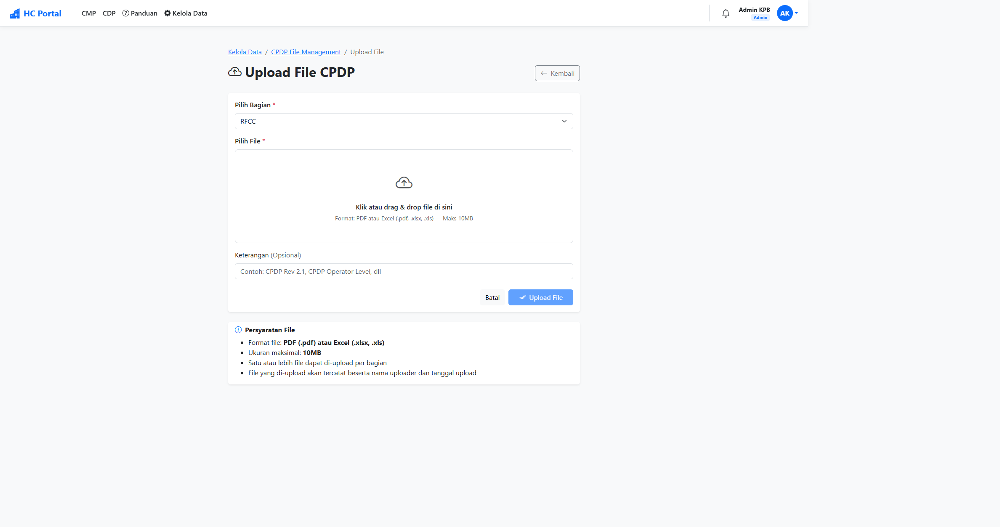
4.24 Upload CPDP
Form upload file panduan CPDP baru dengan drag & drop.
AdminHC
Pilih bagian, unggah file, dan simpan.
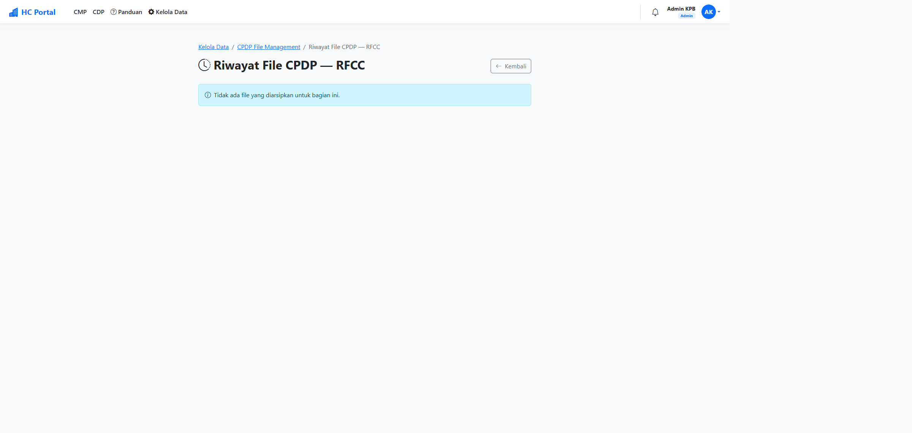
4.25 Riwayat CPDP
Riwayat file panduan CPDP per bagian: aktif, arsip, dan dihapus.
AdminHC
4G. Organisasi, Mapping, Sertifikat & Audit
Struktur organisasi, coach-coachee, renewal sertifikat, dan audit log
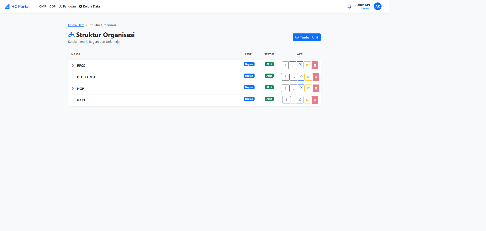
4.26 Kelola Organisasi (Manage Organization)
Kelola struktur organisasi: unit kerja dan bagian dalam bentuk hirarki.
AdminHC
Kelola struktur organisasi: unit kerja dan bagian (departemen) dalam bentuk hirarki.
Tombol
Fungsi
Tambah Unit/Bagian
Menambah unit kerja atau bagian baru
Edit
Mengedit nama unit/bagian
Toggle Aktif
Mengaktifkan/menonaktifkan unit/bagian
Hapus
Menghapus unit/bagian (jika tidak ada pekerja terkait)
Reorder
Mengubah urutan tampilan unit/bagian
4.27 Coach-Coachee Mapping
Pengaturan hubungan coach dan coachee untuk Coaching Proton.
AdminHC
Langkah Penggunaan
Lihat daftar mapping coach-coachee yang sudah ada.
Klik Tambah Mapping untuk mengatur coach baru dan coachee-nya.
Pilih Coach dan Coachee dari daftar pekerja.
Klik Simpan untuk menyimpan mapping.
Gunakan Export untuk mengunduh data mapping ke Excel.
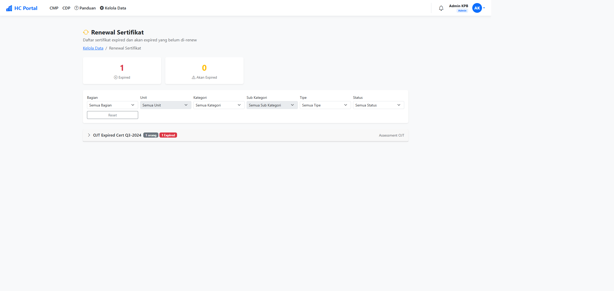
4.28 Renewal Certificate
Hub sertifikat yang kedaluwarsa atau akan segera kedaluwarsa.
AdminHC
Hub sertifikat yang kedaluwarsa atau akan segera kedaluwarsa. Menampilkan pekerja, tipe sertifikat, tanggal kedaluwarsa, dan tombol aksi renewal.
Tombol
Fungsi
Buat Renewal Assessment
Membuat assessment perpanjangan untuk sertifikat tertentu
Filter Status
Menyaring berdasarkan status: expired, expiring soon
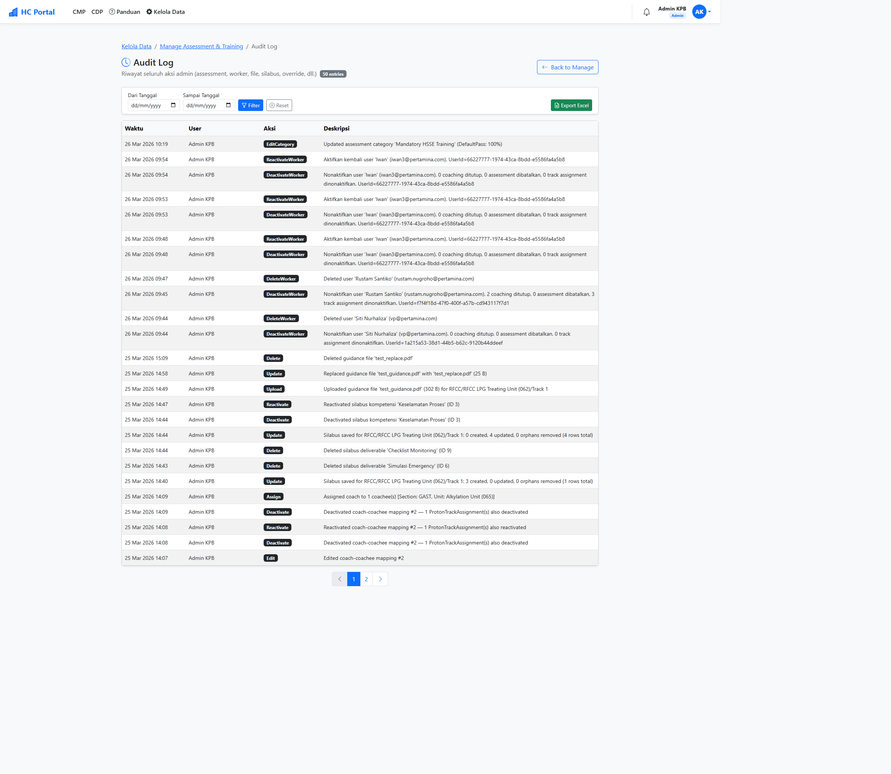
4.29 Audit Log
Riwayat aktivitas sistem: siapa melakukan apa, kapan, dan detailnya.
AdminHC
Riwayat aktivitas sistem: siapa melakukan apa, kapan, dan detailnya. Berguna untuk tracking perubahan data dan troubleshooting.
Gunakan filter untuk menyaring berdasarkan pengguna, tipe aksi, atau rentang tanggal.
Klik Detail pada baris tertentu untuk melihat informasi lengkap aksi tersebut.
4.X Maintenance Mode
Admin
Halaman konfigurasi mode maintenance per modul. Diakses via Kelola Data → Maintenance Mode.
Enable/Disable — Toggle maintenance mode per modul (CMP, CDP, dll).
Custom Message — Atur pesan yang ditampilkan ke pengguna saat modul dalam maintenance.
Estimated End Time — Tentukan perkiraan waktu selesai maintenance.
Pengguna non-admin akan melihat halaman maintenance saat mengakses modul yang sedang dalam maintenance.
5. Proton Data
Kelola data silabus Proton, guidance coaching, dan override manual.
Akses Terbatas
Seluruh halaman Proton Data hanya dapat diakses oleh Admin dan HC.
5.1 Proton Data Hub
Pusat kelola data Proton: silabus, guidance, dan override.
AdminHC
Menu
Fungsi
Silabus
Kelola kurikulum dan deliverable Proton per track
Guidance
Kelola materi panduan coaching
Override
Penyesuaian manual status deliverable/kompetensi
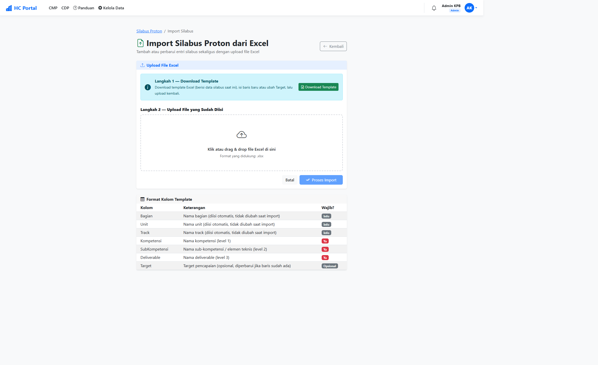
5.2 Import Silabus
Import data silabus Proton dari file Excel.
AdminHC
Import data silabus Proton (kurikulum, kompetensi, deliverable) dari file Excel.
Klik Download Template untuk mengunduh format Excel silabus.
Isi data kompetensi dan deliverable per track pada template.
Upload file dan klik Proses Import.
Sistem akan membuat/update data silabus secara bulk.
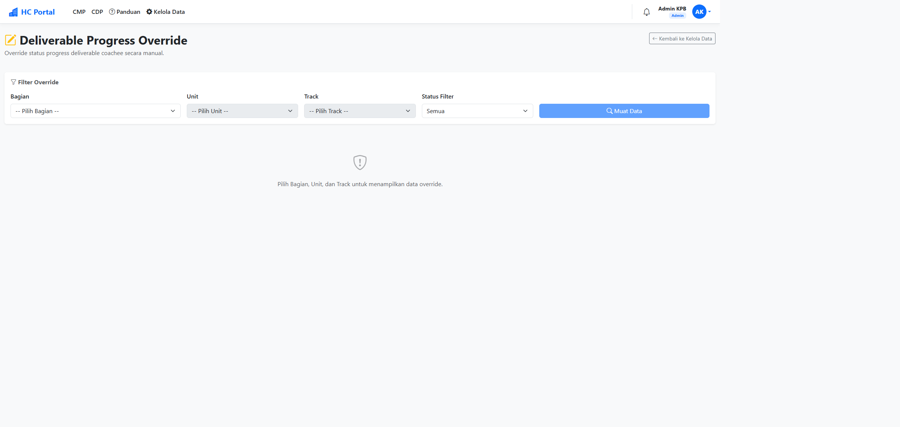
5.3 Override
Penyesuaian manual pada data deliverable dan kompetensi.
AdminHC
Halaman untuk penyesuaian manual pada data deliverable dan kompetensi: mengubah status, menonaktifkan, atau mengaktifkan kembali item tertentu.
Cari pekerja atau deliverable yang ingin di-override.
Pilih aksi: Ubah Status, Nonaktifkan, atau Aktifkan Kembali.
Isi alasan override lalu klik Simpan.
Perhatian
Override bersifat manual dan akan tercatat di audit log. Gunakan hanya untuk kasus-kasus khusus.
6. Panduan Penggunaan
Halaman panduan dan dokumentasi penggunaan HC Portal.
6.1 Halaman Panduan
Landing page panduan dengan pilihan modul berdasarkan role pengguna.
Semua
Langkah Penggunaan
Pilih modul yang ingin dipelajari (CMP, CDP, Akun, Data, Admin).
Modul admin hanya tampil untuk pengguna dengan role Admin/HC.
Klik modul untuk membuka detail panduan beserta dokumen yang bisa diunduh.
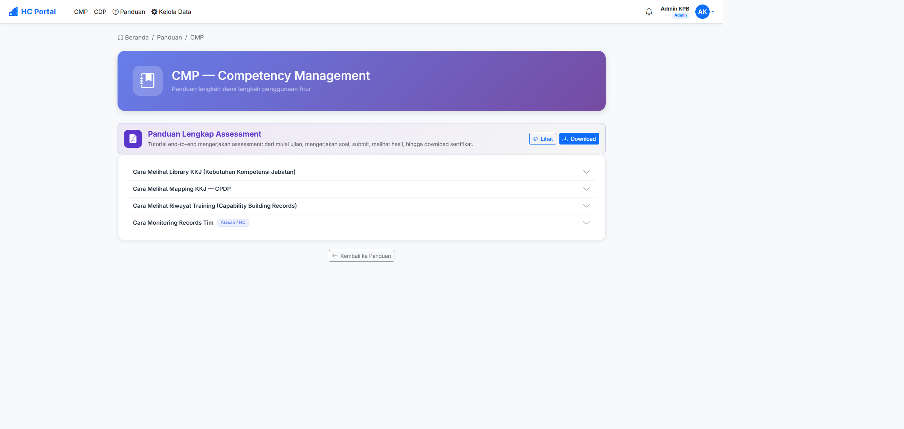
6.2 Detail Panduan (Guide Detail)
Detail panduan per modul dengan penjelasan fitur dan dokumen unduhan.
Semua
Halaman detail panduan per modul: berisi penjelasan fitur, langkah penggunaan, dan dokumen panduan yang bisa diunduh (PDF, HTML).